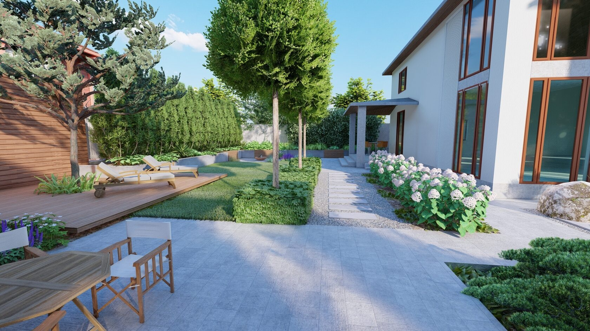

Tilia landscape · СамараЛандшафтный проект.
Ландшафтный проект.
Для вашего участка.
Надежда Толкушкина, ландшафтный дизайнер в Самаре. Разрабатываю проекты благоустройства и озеленения, сопровождаю их реализацию.
Обсудить участок
ПРИМЕРЫ РЕШЕНИЙСначала планировка.
Сначала планировка.
Потом сад.
Расположение дорожек, посадок и зон отдыха связано с тем, как вы пользуетесь участком. Рассмотрите проектные решения и обсудите пожелания к своему саду.
Обсудить участок